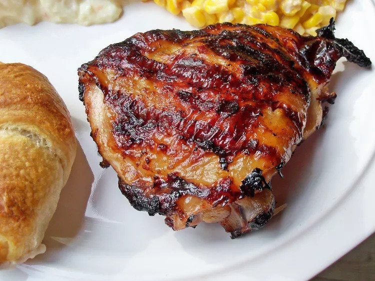

Italian Chicken Marinade

Immerse yourself in the robust essence of Italy with the Italian Chicken
Marinade.
This blend of common pantry ingredients, including olive oil,
balsamic vinegar, minced garlic, Italian seasoning, and honey, gives a new
lease of life to your chicken dishes. A melody of sweet, tangy, and savory,
this marinade provides a versatile base that amplifies the depth and flavor
of your chicken, making every mealtime a culinary adventure.
Ingredients
- 1 (16 ounce) bottle Italian-style salad dressing
- 1 teaspoon garlic powder
- 1 teaspoon salt
- 4 skinless, boneless chicken breast halves
Directions
- Whisk salad dressing, garlic powder, and salt together in a shallow
baking dish; add chicken breasts and turn to coat. Cover the dish
with plastic wrap and marinate in the refrigerator, 4 hours to
overnight.
- Preheat an outdoor grill for high heat and lightly oil the grate.
- Remove chicken from marinade and shake off excess; discard remaining
marinade.
- Cook chicken on the preheated grill until no longer pink in the center
and the juices run clear, about 7 to 8 minutes on each side. An
instant-read thermometer inserted into the center should read at least
165 degrees F (74 degrees C).